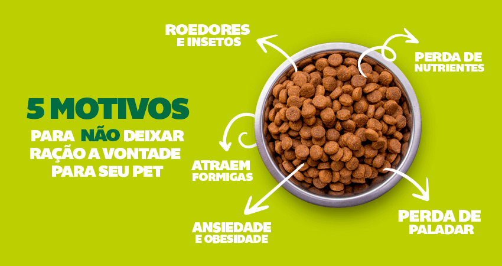

Cuidados Essenciais
Cuidar da saúde do seu animal de estimação é uma responsabilidade que vem com muitas recompensas. Um pet saudável é um companheiro feliz e cheio de energia, e pequenas ações diárias podem fazer uma grande diferença em sua qualidade de vida. Ao seguir estas dicas e estar sempre atento às necessidades do seu amigo peludo, você estará contribuindo para uma vida longa e saudável. Lembre-se: o amor e o cuidado que você oferece são fundamentais para a felicidade do seu pet. Invista na saúde dele e desfrute de momentos incríveis juntos!
Alimentação Saudável
A alimentação é um dos pilares fundamentais para a saúde e bem-estar dos animais de estimação. Uma dieta balanceada não só promove o crescimento saudável, mas também previne diversas doenças e problemas de saúde.
Diversão e Brincadeiras
Incorporar brincadeiras na rotina do seu pet é um investimento na saúde e felicidade dele. Reserve tempo diariamente para atividades lúdicas, e observe como seu animal se torna mais feliz e equilibrado. Afinal, um animal que brinca é um animal saudável!